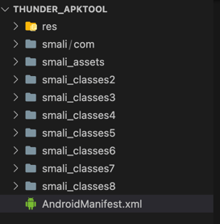
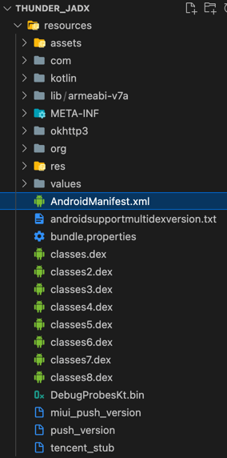
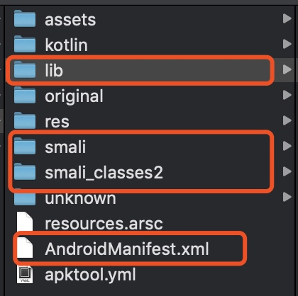
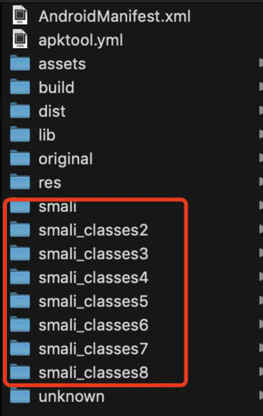
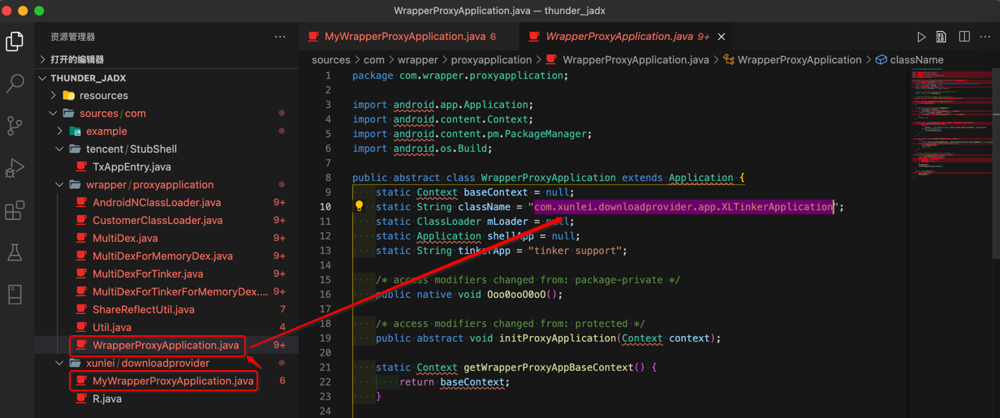
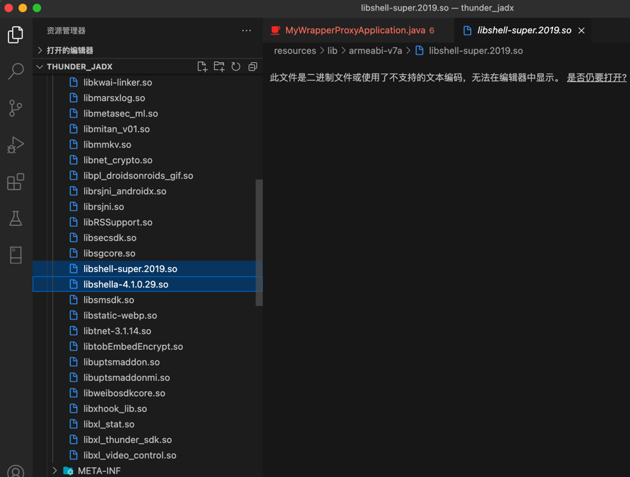

加固
对于加固的安卓apk，解包后，不能只是简单的修改源码了，还有额外的其他很多动作：
举例
腾讯乐固加固的迅雷apk
比如对于腾讯乐固加固的迅雷的apk，关于改动前后要考虑的事情有：
- 手上有可供重新打包的项目文件和目录
- 对于重新打包的原始输入文件内容，来自：
- apktool反编译后的所有内容
- 
- 注：此处
apktool反编译出错而终止，所以内容不全- 成功反编译后，应该有
assets、lib、META-INF、res等目录才对
- 成功反编译后，应该有
jadx反编译后的resources目录下的所有内容- 
- 注：此处
jadx反编译，没有任何报错- 所以有完整的：
assets、lib、META-INF、res、kotlin等相关目录- 但是其实dex方面的反编译，内部是有问题的，因为还是腾讯乐固加密，没有成功反编译
- 所以有完整的：
- apktool反编译后的所有内容
- 对于重新打包的原始输入文件内容，来自：
dex转smali- 涉及到
baksmalimobsf框架的baksmali.jar
- 如果是加密的
dex，则还要解密dex- 使用
DexExtractor的Decode.jar进行解密
- 使用
- 涉及到
- 修改要打包的文件
- 新增
smali源码- 把
dex转出的smali代码，放到对应文件夹中smalismali_classes2smali_classes3- ...
- 举例
- 
- 
- 把
- 修复
AndroidManifest.xml- 替换入口
Application的android:name的com.tencent.StubShell.TxAppEntry，换成实际的app的入口Activity
- 此处是：
com.xunlei.downloadprovider.app.XLTinkerApplication- 找到的入口：
sources/com/wrapper/proxyapplication/WrapperProxyApplication.javapublic abstract class WrapperProxyApplication extends Application { static String className = "com.xunlei.downloadprovider.app.XLTinkerApplication";- 
- 找到的入口：
- 替换入口
- 删除加固相关内容
- 此处是腾讯乐固加密
- 要删的（腾讯乐固加壳后新增的）相关内容是：
jadx反编译后- 
- 能找到：
resources/lib/armeabi-v7a/libshell-super.2019.soresources/lib/armeabi-v7a/libshella-4.1.0.29.so- 没找到：
libtpnsSecurity.so
- 要删的（腾讯乐固加壳后新增的）相关内容是：
- 此处是腾讯乐固加密
- 新增